燕岳
| 日付 | 2008年7月26日（土） - 2008年7月27日（日） | ||||
|---|---|---|---|---|---|
| 山域 | 北アルプス | ||||
| メンバー | グループ（男3女3） | ||||
| 山行形態 | 前夜発1泊2日小屋泊 | ||||
| アクセス | 電車、バス | ||||
| ルート (Map) |
|
【1日目】【2日目】
2日目
早朝4:00に起きて夜明けを待つ。

4:55 燕山荘から御来光を拝む。
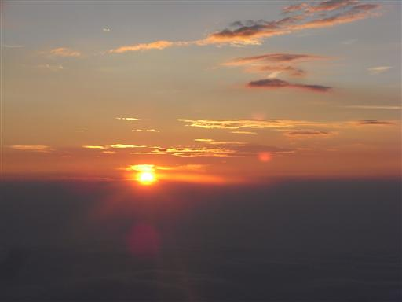
展望台には多くの人が集まっている。
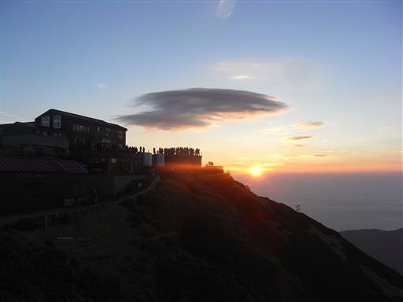
早朝は良く晴れていて、穂高・槍方面がくっきりと見える。
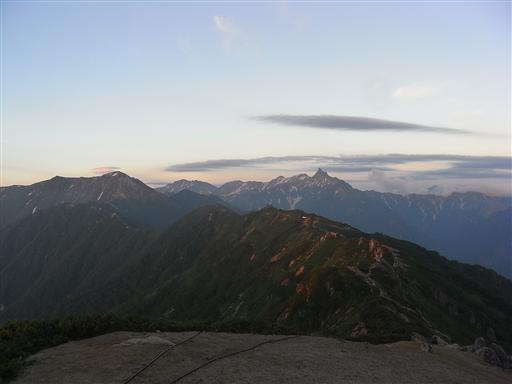
黒部源流の山々も朝日を浴びて輝き出す。
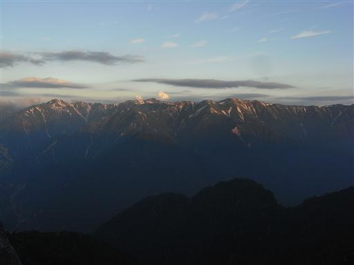
遠くの方には南アルプスと左に富士山がわずかに見える。
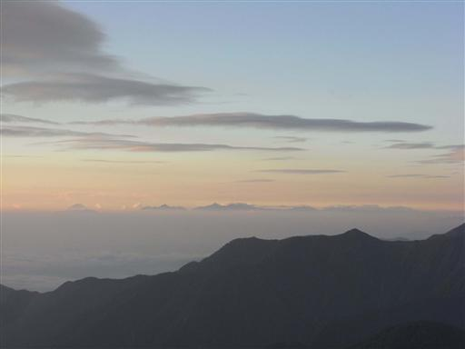
間近には燕岳が朝日を浴びて光っている。

6:30 朝食をとって小屋を出発する。
案内板に載っている山名はビッグネームばかり。
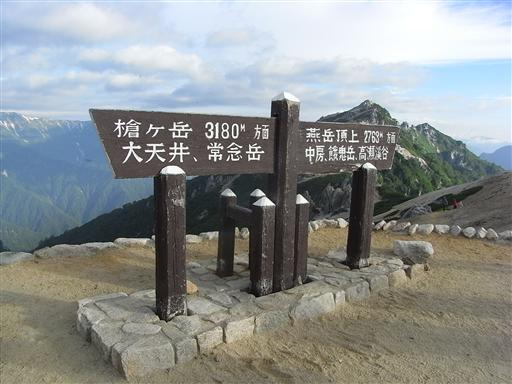
小屋前は、これから出発しようとする登山者であふれている。
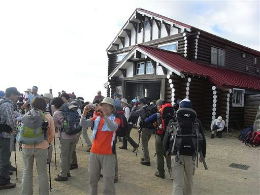
帰りは登って来た道を戻る。
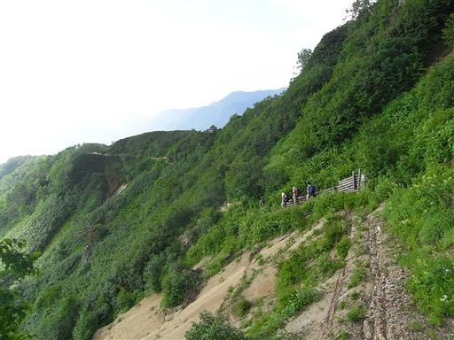
大天井岳の右手に、昨日は雲で見えなかった槍ヶ岳が見えている。
ここで槍は見納め。
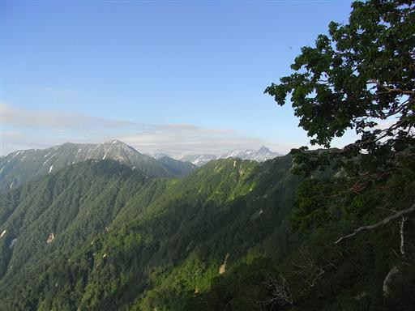
空は青空が広がっている。今日は本当に天気がいい。
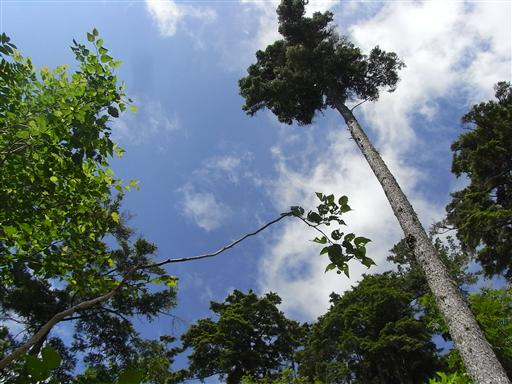
カミキリムシを発見。
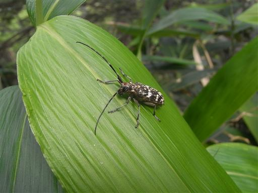
10:26 中房温泉到着。温泉に入って帰る。
早朝は非常に天気が良かったのに、帰りの電車では甲府付近で豪雨に遭い、
電車が1時間程ストップしてしまった。
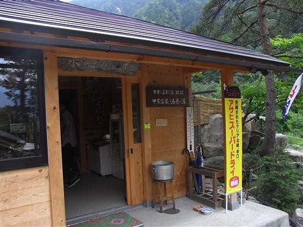
他の山行記録